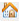
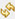

Premiers pas avec Elexis
Contents
- 1 Introduction
- 2 Perspectives et Vues
- 3 Saisie Patients
- 4 Ouvrir et changer les cas
- 5 Ouvrir Consultation
- 6 X-ray / échographie / ECG ordres
- 7 Imprimer des étiquettes
- 8 Créer des documents
- 9 Document externe avec Elexis
- 10 Enregistrement / commande de laboratoire
- 11 Agenda
- 12 Créer une facture instantanée
Introduction
Les instructions suivantes donnent un aperçu des fonctions de base possibles avec Elexis.
Perspectives et Vues
L'écran ainsi que les fenêtre principales s'appellent "Perspectives". Selon la tâche que vous souhaitez effectuer, il existe une perspective appropriée.
Des perspectives prédéfinies peuvent être trouvées sous la barre des menus:

(1) Les icônes des Perspectives.
(2) Veuillez utiliser de préférence les Perspectives ouvertes.
(3) Est le patient actuellement séléctionné. Avec l' Ordonnance sélectionnée etc...
Les fenêtres individuelles, également appelées "Vues", sont toutes librement placées et forment ensemble la Perspective.
En double-cliquant sur l'onglet d'une vue ou d'une fenêtre, vous pouvez l'agrandir. Un autre double-clic mène à la position de départ à nouveau. Si vous vous trompez et ne vous rappelez pas comment revenir en arrière, veuillez utiliser l'icône "Home"  et / ou le bouton de réinitialisation  en haut à gauche.
Si vous avez fermé une vue et que vous souhaitez la rouvrir ou si vous cherchez une nouvelle vue, veuillez utiliser l'icône "Ouvrir Vue" .
.
Saisissez (1) le nom de la vue que vous recherchez ou (2) cliquez sur le dossier souhaité.
Rappel des vues les plus importantes:
Patients
- Patients = Chercher patients
- Patient Detail = Entrer les informations patient
- Affichages parallèles = Agenda graphique avec colonnes
- Cas = Entrées d'assurance maladie
- Consultation = Entrée pour, p.e La consultation d'aujourd'hui
- Consultations = Aperçu de toutes les consultations
- AUF = Certificats maladie
- Liste des médicaments = Médicament fixe et historique du patient
- Compendium online = Compendium
Courrier
- Sélection de lettre = Créer une lettre
- Bac d'entrée = Documents du p.e. Où le scanner doit être stocké
- Omnivore = Documents qui sont classés sous un Patient
Laboratoire
- Laboratoire (Roche) = Règlements de laboratoire et intrants de laboratoire
- Inbox = Valeurs de laboratoire que les médecins doivent encore regarder
Adresses
- Contacts = Tous les contacts (Médecin etc...)
- Détails sur le contact = Détails de tous les contacts
Commandes
- Sélection articles = Sous article principal sont tous les médicaments
- Commande = Vous pouvez gérer l'ensemble du processus de commande
- Entrepôt = Ici, tout l'assortiment de l'entrepôt est indiqué
Facturations
- Consultations (recherche par date) = Positions
- Consultations à facturer = Vérifier les factures et les factures proposées peuvent être transférées à la liste des factures
- Liste de factures = Rechercher, imprimer ou annuler des factures
- Données de facturation = Sélectionnez la facture dans l'aperçu de facturation et consultez plus de détails dans cette vue
- Apercu facture = Afficher toutes les factures
- ESR = Importer le fichier de facturation
Saisie Patients
Entrez le patient et recherchez, s'il n'est pas présent cliquez sur le plus vert
Plus il y d'informations enregistrées, mieux c'est, mais il ne doit pas nécessairement être rempli.
Saisie des Patients avec la carte de couverture
Dans la vue des patients, sélectionnez l'icône carte de couverture.
La boîte de dialogue "Importation de données externes" s'ouvre, veuillez insérer la carte de couverture dans le lecteur. La requête est automatique.
Veuillez noter que le client HIN doit être allumé et actif pour la requête.
Modifier les données patient
Des modifications peuvent être apportées dans la vue détaillée du patient. Pour effectuer des modifications, le cadenas doit d'abord être ouvert.
Ouvrir et changer les cas
Cas ouvert via plus vert sur la vue des Cas.

- (1) Choisissez la tarification
- (2) Choisir les destinataire de la facture
- (3) Entrez le numéro d'assurance
- (4) Confirmez avec OK
Le lettrage souligné bleu ouvre la sélection d'adresse.
Un double clic sur un cas ouvre ses détails dans la vue 'cas'. Des modifications peuvent être effectuées jusqu'à ce qu'une facture soit créée. Ensuite, seuls les champs optionnels peuvent être modifiés.
Ouvrir Consultation

- (1) Le plus vert ouvre une nouvelle Consultation
- (2) Consultation pour le cas choisi
- (3) Type de Consultation
- (4) Vous pouvez entrer un déscriptif ou une note

Facturation des médicaments
Dans la consultation, cliquez sur "Règlement"
- (1) Dans la vue, les services basculent d'abord vers l'onglet Article principal
- (2) Ensuite, recherchez l'article ou le médicament
X-ray / échographie / ECG ordres

- (1) Chercher Patient
- (2) Click droit >> Support de données sur disque (GDT)
- (3) Envoyer des données de base

- (1) Sélectionnez 'Standard-Datei-Kommunikation' Le chemin vous permet d'identifier à quel périphérique les données seront envoyées. ATTENTION: tous les ordinateurs n'envoient pas tous sur le même périphérique!
- (2) Confirmez avec OK
- (3) Par la suite, le test / la mesure peut être effectué sur l'appareil
- (4) Pour l'ECG et l'audiométrie, un PDF est retourné et classé dans l'Omnivore.
Imprimer des étiquettes
Il y a trois étiquettes à choisir, étiquette de patient, étiquette de commande et étiquette d'adresse.
Créer des documents
Certificat d'invalidité
{kind=link}
Icône plus vert crée un nouveau certificat maladie.

Sélectionnez les données, si nécessaire, ajustez le pourcentage et la raison de l'arrêt maladie. Confirmez avec OK. Imprimez via le symbole d'impression.
Créer une lettre de transfert

- (1) Choisir Patient
- (2) Plus vert dans sélection de lettres
- (3) Sélectionnez le modèle souhaité
- (4) Si nécessaire, sélectionnez le destinataire
- (5) Imprimer document
Document externe avec Elexis
Les documents externes peuvent être trouvés dans la vue "Omnivore". Vous voyez toujours les documents du patient actuellement sélectionné dans la vue.
Enregistrement / commande de laboratoire
Il y a deux vues sur lesquelles le laboratoire peut être consulté.
Pour entrer un nouveau paramètre, il faut d'abord le prescrire.
- (2) Ouvre la vue pour l'ordonnance de laboratoire
- (1) Saisissez des valeurs / groupes
- (2) Personne responsable (si désiré)
- (3) Confirmez
- (1) Les règlements peuvent être trouvés en haut à droite des résultats
- (2) Ouvrez les valeurs prescrites
- (3) Entrer des valeures. IMPORTANT: "Touche Enter" active le champ. Entrer avec: (Touche ENTER) Entrer la valeur (Touche ENTER) Entrer la valeur suivante, etc...
Agenda
IMPORTANT : Dans Elexis un patient est toujours séléctionné. Toutes les vues sont mises à jour pour ce patient. Lorsque vous attribuez des rendez-vous, cela signifie que vous attribuez généralement le rendez-vous au patient actuellement sélectionné
Il y a 5 Vues différentes de l'Agenda :
- Agenda - Principalement pour les médecins (une seule zone est affichée)
- Agenda grand - Aperçu tabulaire d'une plage
- Affichage parallèle - Aperçu graphique de toutes les plages horaires en une journée
- Affichage de la semaine - Vue d'ensemble graphique des plages sur une semaine
- Evénements - Rendez-vous futurs et passés du patient sélectionné
Rendez-vous
- (1) Sélectionnez la plage
- (2) Sur un créneau horaire libre => Bouton droit de la souris => Nouveau rendez-vous
- (1) Sélectionner la période (La suggestion est la première date libre de la journée)
- (2) Contrôler le patient ou en obtenir un autre via "Texte libre" ou "Sélectionner un contact"
- (3) Sélectionnez le type de rendez-vous
- (4) Entrer la raison
- (5) Confirmer
"IMPORTANT:" Lorsque le patient arrive, le numéro du système de contrôle du patient est entré au bas de la raison.
Changer rendez-vous
Double-cliquez sur le rendez-vous ouvre ce dernier.

Exemple :
- (1) Type de rendez-vous modifié
- (2) Texte ajouté
- (3) Confirmer

Créer une facture instantanée
- (1) Choisir Patient
- (2) Dans la vue de cas, sélectionnez le cas
- (3) La consultation qui doit être réglée. Bouton droit de la souris => créer une facture
Les factures créées peuvent être trouvées dans la perspective de facturation.
- (1) Choisissez la perspective Facturation. Puis la Vue "Liste de factures".
- (2) Assurez-vous que vous faites bien 'ouvrir' puis, afficher et mettre à jour les factures.
- (3) Si nécessaire, ajustez la vue. A propos du triangle devant le patient respectif. Vous pouvez voir les détails jusqu'à ce que la facture apparaisse. Sélectionnez la facture et faites un clic droit dans la liste.
- (4) Choisissez Imprimer pour imprimer la facture.
- (1) Dans la boîte de dialogue, sélectionnez Imprimer en tant que facture Tarmed.
- (2) Passer la facture. Cochez ce qui corréspond.
- (3) Vous pouvez définir quels formulaires doivent être imprimés. P.e. ESR = Bulletin de Versement